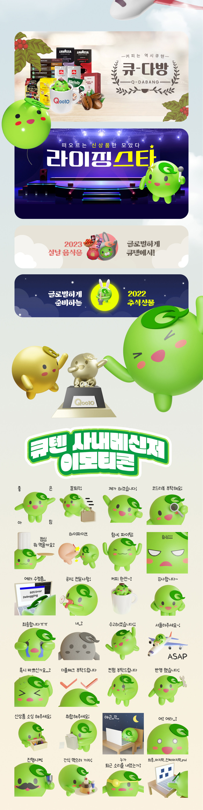

큐텐 캐릭터 마메큐 3D제작 프로젝트
2021년 메타버스 성장에 따라 3D 캐릭터 활용이 증가하는 추세에 맞춰, 큐텐도 3D 캐릭터 제작의 필요성을 인식했습니다.
오픈소스 툴인 블렌더3D를 사용해 기존 2D 마메큐 캐릭터를 3D로 변형하고, 다양한 상황과 표정을 반영한 3D 리소스를 제작했습니다.
이 프로젝트는 한국과 싱가포르에서 큐텐의 브랜딩 발전에 크게 기여했으며, 현대적인 브랜드 이미지 구축과 사용자 경험 향상을 이끌어냈습니다
기여도
프로젝트 기획 : 70% ㅣ 3D 디자인 : 100% ㅣ 모션그래픽 : 100%

